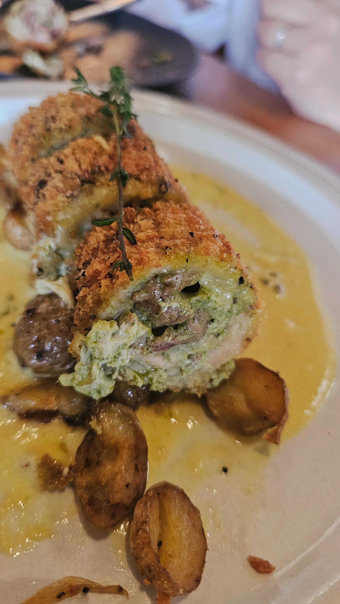
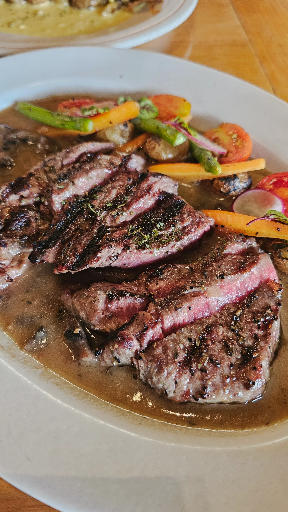
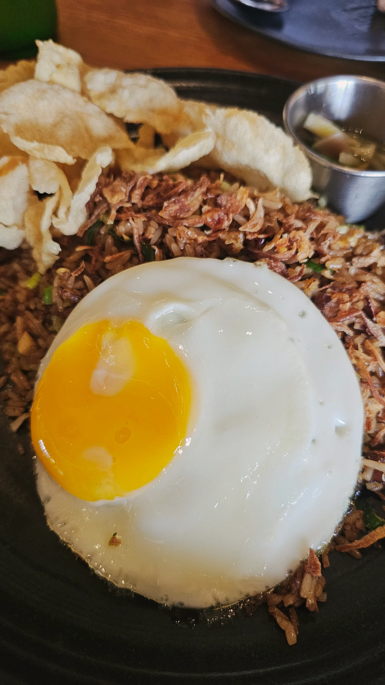

피손 우붓(Pison Ubud)
발리 우붓에 있는 한국인 추천 맛집 피손 우붓(Pison Ubud) 다녀왔습니다.

1) 피손 우붓(Pison Ubud)
위치: Jl. Raya Pengosekan Ubud No.10X, Ubud, Kecamatan Ubud, Kabupaten Gianyar, Bali 80571 인도네시아
운영 시간: 07:00 ~ 23:00
발리 우붓지역에 위치한 피손 우붓(Pison Ubud)은 한국인들의 추천 맛집으로 유명하지만 외국인들에게도 유명한 맛집입니다.
브런치카페 느낌의 음식점으로 발리는 이런식으로 운영하는 음식점들이 많은 것 같습니다.
메뉴판 PDF 보기
메뉴가 너무 많아 공식 사이트에서 제공하는 메뉴 파일(PDF) 링크 추가했습니다.

2) 좋은 점
발리하면 가장 걱정되는 발리밸리 걱정을 하지 않아도 되는 음식점입니다. 그래서 한국인에게 더욱 인기있는 곳인 것 같습니다.
실내와 실외 좌석이 있는데 실내는 에어컨이 많아 시원해서 너무 좋았습니다. 실외 좌석 중에 푸르른 논뷰를 보면서 음식을 먹을 수 있는
곳이 사진 스팟으로도 인기가 좋습니다. 음식들은 대부분 무난하고 가격도 착하고 종류가 많아 접근성이 좋습니다.
이번에 제가 먹은 음식중에 트러플 텐더로인 스테이크(truffle tenderloin steak) 는 평범했고 소꼬리 볶음밥(oxtail fried rice) 은 맛있었습니다.

3) 아쉬운 점
저는 웨이팅이 없었지만 원래는 웨이팅이 꽤 있는 곳이라고 합니다. 더운 날씨에 밖에서 기다리다보면 꽤나 힘들 것 같습니다.
생맥주가 없는 것도 아쉬운 점입니다. 아! 화장실이 넓지만 남녀 공용입니다.
주문한 음식 중에 치킨 꼬르동블루(chichen cordon bleu)는 비추입니다.(노맛)

4) 이런 사람에게 추천합니다
우붓에서 1박이상 한다면 추천합니다. 특별한 맛은 아니지만 그렇다고 맛이 없지도 않아 괜찮습니다. 블로그나 인스타를 보면 하루에 세번을 가서 먹었다는 사람도 있을정도로 검증된 맛집입니다.

5) 결론 한 줄
메뉴 종류가 많아서 다 먹어보지는 못했지만 특출난 맛이 있다기보다는 쾌적한 환경에서 발리밸리 걱정없이 먹기 좋습니다.